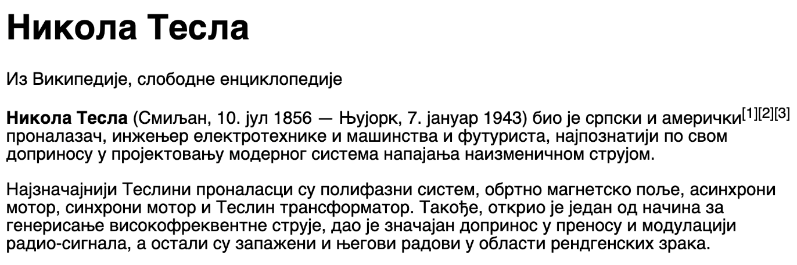
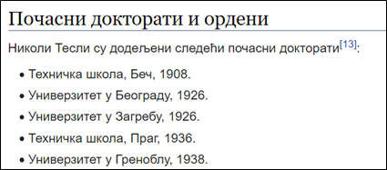

Sadržaj
HTML jezik sadrži elemente kojima možemo da opišemo strukturu teksta.
Svaki tekstualni dokument ima delove koji imaju neka značenja (naslovi, pasusi teksta, tabele, liste). Na sledećoj slici je prikazan primer teksta o Nikoli Tesli koji je (u avgustu 2022. godine) preuzet sa sajta Vikipedija:
U tekstu možemo da primetimo sledeće elemente:
U jeziku HTML se mogu označiti delovi teksta koji predstavlјaju naslove, pasuse, podeblјani ili izdignuti tekst, tako što se ovi delovi stave u odgovarajuće HTML elemente. Na primer, prvo pominjanje Nikole Tesle u tekstu je naslov, pa će ono biti stavlјeno u h1 element. Svaki pasus teksta će biti stavlјen u po jedan p element. Na ovaj način će pregledač znati koji delovi dokumenta predstavlјaju različite celine i koje vrste je koja celina u tekstu.
U HTML jeziku postoji veliki broj oznaka kojima možete okružiti tekst i tako mu dati specijalno značenje.
| Element | Tagovi | Naziv na engleskom |
|---|---|---|
| Pasusi teksta | p | paragraph |
| Podnaslovi različitih nivoa | h1, h2...h6 | heading |
| Podebljan tekst | b | bold |
| iskosen tekst | i | italic |
| podvucen tekst | u | underline |
| podignut tekst | sup | superscript |
| spusten tekst | sub | subscript |
Tekst nisu samo naslovi i pasusi. U velikom broju slučajeva potrebno je dodati i neke liste u tekst. U ovoj lekciji ćete naučiti kako se koriste HTML elementi koji predstavlјaju složenije tekstualne strukture poput listi.
U ovom kontekstu lista predstavlјa niz kratkih tekstova, koji se prikazuju jedan ispod drugog. Liste se koriste pri nabrajanju, zadavanju nekih koraka, i slično. Pogledajmo kao primer sledeći tekst o počasnim doktoratima koje je dobio Nikola Tesla (preuzeto sa sajta Vikipedija):
Doktorati koje je Nikola Tesla dobio su kratki tekstualni zapisi koje želimo da nabrojimo u vidu liste. Svaka stavka u listi se predstavlјa elementom li (engl. list item).
Svi elementi liste se stavlјaju u poseban HTML element koji označava listu kao celinu. U HTML jeziku se za predstavlјanje cele liste najčešće koristi jedan od ova dva elementa:
Numerisanoj listi je moguće proslediti atribute start i type. Atribut start opisuje od kog rednog broja počinje numeracija, dok je atributom type moguće promeniti tip numerisanja, na primer, numerisati slovima ili rimskim brojevima.
Kao atribut type moguće je proslediti:
Uređene i neuređene liste je moguće ugnježdavati kako bi dobili podnivoe. Unutar elementa li kao sadržaj je, pored teksta, moguće dodati posebnu listu.
Pored običnog teksta i listi, u veb strane često dodajemo i tabele. Sada ćemo naučiti kako to može da se uradi i koji HTML elementi se koriste za to.
Tabele predstavlјaju podatke organizovane u obliku redova i kolona.
Prvi red u tabeli sadrži nazive kolona i naziva se zaglavlje (engl. heading) tabele. Ispod ovog reda se nalaze redovi koji sadrže podatke (engl. data) u svojim ćelijama (engl. cells).
Tabela je složeni HTML element, koji sadrži više drugih elemenata različitih vrsta. HTML elementi sadržani u tabeli predstavlјaju različite delove tabele (zaglavlјe, ostali redovi, ćelije).
| Element | Opis | Naziv na engleskom |
|---|---|---|
| table | tabela | table |
| thead | zaglavlje tabele | table header |
| tbody | telo tabele | table body |
| tr | red tabele | table row |
| th | ćelija zaglavlja tabele | table heading |
| td | ćelija tela tabele | table data |
| tfoot | podnožje tabele | table footer |
| caption | naslov | caption |
Cela tabela je okružena oznakama table i /table. Unutar svake tabele se nalaze zaglavlјe (između oznaka thead i /thead) i telo (između oznaka tagova tbody i /tbody). Unutar zaglavlјa i tela se nalaze redovi.